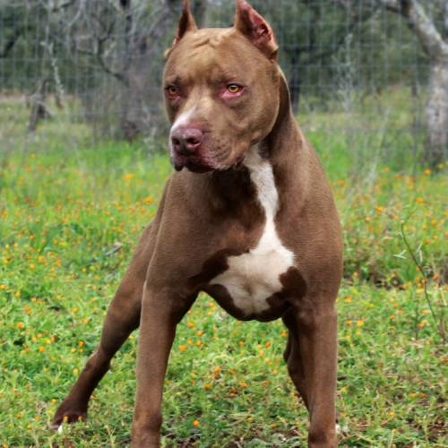

Il Pitbull è un cane di taglia media, muscoloso e compatto, noto per la sua forza e agilità. Ha un pelo corto e liscio che può presentarsi in molti colori diversi. È un cane molto energico, coraggioso e leale, spesso molto affettuoso e protettivo nei confronti della famiglia. Nonostante la sua reputazione a volte controversa, con un corretto addestramento e socializzazione è un compagno equilibrato e gentile. Richiede molto esercizio fisico e stimoli mentali per essere felice e in salute.
Il Pitbull maschio è un cane di taglia media, robusto e muscoloso, con un'altezza che varia generalmente tra i 45 e i 53 cm al garrese e un peso che può raggiungere i 25-30 kg. Ha un corpo compatto e ben proporzionato, con un pelo corto e spesso di vari colori. È noto per la sua grande energia, coraggio e determinazione, ma anche per la sua lealtà e affetto verso la famiglia. Ha bisogno di un addestramento fermo e di una buona socializzazione fin da cucciolo per esprimere al meglio il suo carattere equilibrato.
.jpg)
La femmina di Pitbull è generalmente un po’ più piccola e snella rispetto al maschio, con un’altezza che varia tra i 43 e i 50 cm e un peso tra i 20 e i 27 kg. Mantiene una struttura muscolosa e atletica, con un aspetto elegante e agile. Anche lei è energica, coraggiosa e molto leale, ma spesso mostra un carattere leggermente più dolce e paziente rispetto al maschio. Come il maschio, necessita di un’educazione ferma e di una buona socializzazione per sviluppare un temperamento equilibrato e socievole.